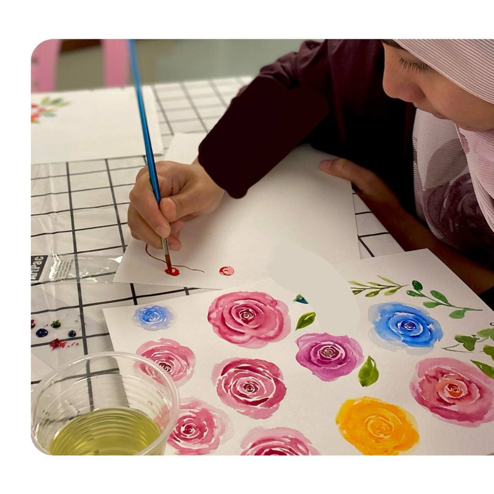
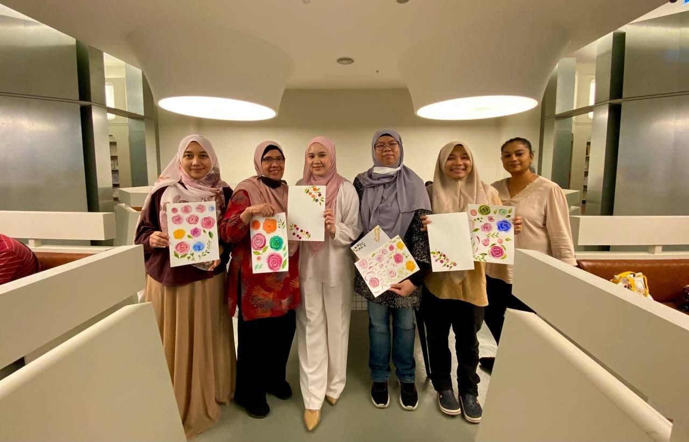
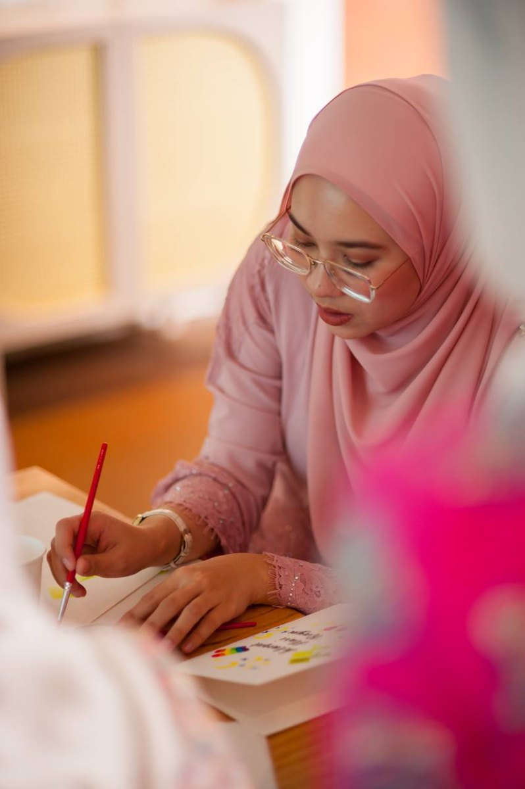
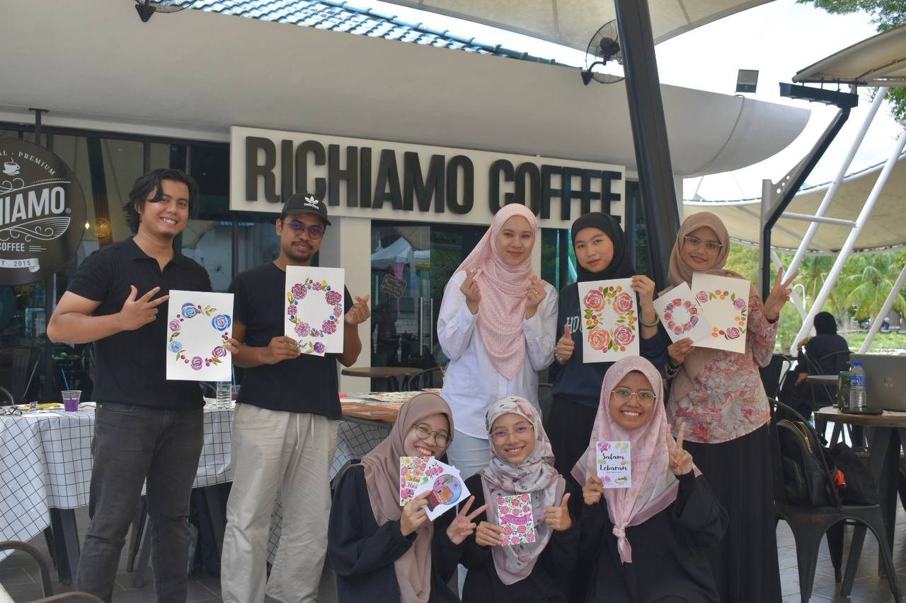
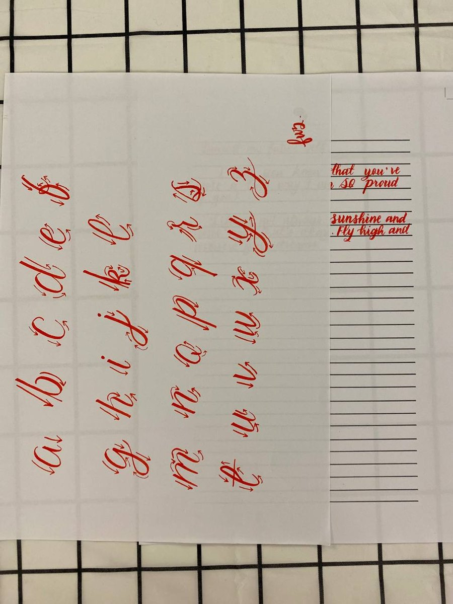
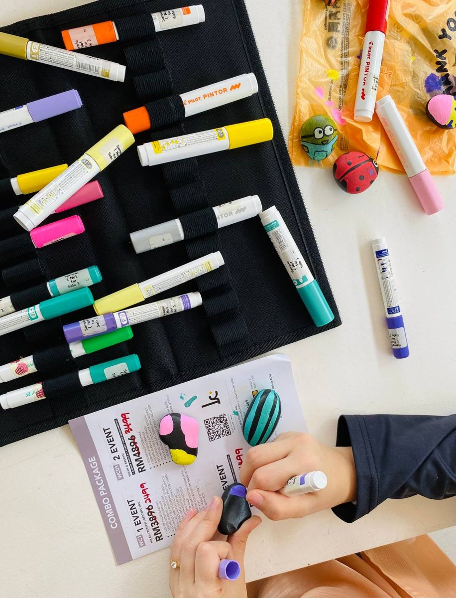

Just bring
yourself!
yourself!
Art workshops made for beginners
We’ll guide you through every stroke, and you’ll leave with something you made yourself. Come spend a little time discovering your creative side in a relaxed, hands-on class.
Plan a collaborationExplore workshops
Floral Watercolour Workshop · BookXcess, LaLaport
As seen on TV3 & TV9BookXcess LaLaportIIUM Arts ClubPicco Polo PenangBalai Seni Negara

Hi, I'm Farrah!
Less Perfection, More Expression
An art enthusiast with a passion for mental health, creativity, and the little joys of slowing down.
I love bringing people together through art. In my classes, we'll discover the art of letting go of control and simply letting the brush dance with colours.
- MediumWatercolour & Lettering
- FormatBeginner-friendly
- ForPrivate groups & organisations
- Based inMalaysia
A little something for every creative soul.
Discover a range of creative workshops, from floral watercolour to cursive handwriting and lettering.
Floral Watercolour
Roses, hydrangeas and tulips: materials, basic strokes and supported practice. Art materials are provided.
Discuss this session on WhatsAppHey, We’re in the News!
A few moments when Farrah's art and creative journey were featured on Malaysian television and radio.

'Loose Floral' Gaya Santai Lukis Bunga
Buletin Utama TV3

Seni Lukisan Bunga Tanpa Batas
Buletin TV9
View more broadcast photographs


Workshops Gallery

Floral Watercolour at Richiamo Coffee
Ramadhan Charity Watercolour Workshop

Cursive Writing Workshop

Art Stone Workshop
How we work together.
1. Share your idea
Tell me your preferred date, location, audience, group size and the experience you have in mind.
2. Shape the session
We confirm activity, timings, materials, responsibilities and terms before anything is announced.
3. Make it happen
I facilitate the session so your guests can settle in, learn and enjoy making.
Let's make room for creativity.
Planning a workshop, private session or creative partnership? Share the date, place and group size, and we'll see what works.
farrahwartz@gmail.comInstagram